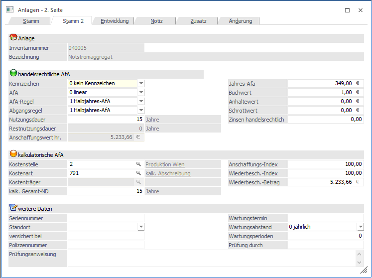
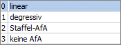
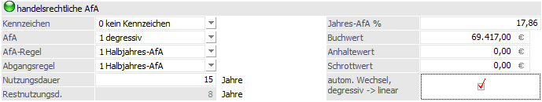

Im Register Stamm 2 werden die Werte für die handelsrechtliche und kalkulatorische Abschreibung hinterlegt. Ergänzend stehen einige Informationsfelder zur Verfügung.

handelsrechtliche AfA
In diesem Register können die Werte hinterlegt werden, die für die Berechnung der handelsrechtlichen AfA benötigt werden. Vorbelegt werden diese Felder mit den Einstellungen der steuerlichen AfA aus dem Register Stamm (und können natürlich editiert werden):
Hinweis
Im Anlagenstamm werden bei Erfassung eines neuen Anlagenguts die Eingaben und Änderungen im Bereich "steuerrechtliche Abschreibung" immer in den Stamm 2 in den Bereich "handelsrechtliche AfA" übernommen, bis das Anlagengut gespeichert wird.
Ø Kennzeichen
Durch Anklicken des Pfeils neben dem Eingabefeld werden die hier gültigen Eingabemöglichkeiten aufgelistet:

ü 0
Kein Kennzeichen, d.h. ein
normales Anlagegut, bei dem es sich weder um ein geringwertiges Wirtschaftsgut,
noch um eine Finanzanlage handelt.
ü 1
Finanzanlage (z.B.
Wertpapiere - werden nach speziellen Richtlinien bewertet).
Bei diesem
Kennzeichen wird keine AfA gerechnet, auch wenn eine Nutzungsdauer, das
Inbetriebnahmedatum und eine AfA-Art (linear, degressiv oder Staffel-AfA)
eingetragen ist.
ü 2
GWG Sofortabschreibung, d.h.
das geringwertige Anlagegut kann schon im Jahr der Anschaffung mit seinem
gesamten Anschaffungswert abgeschrieben werden. (GWG = Anschaffungswert unter
EUR 400,- netto - Stand: Juli 2003)
In Deutschland ist die Sofortabschreibung
nur bis 31.12.2007 gültig für GWGs mit Anschaffungswert bis EUR 410,-. Ab dem
01.01.2008 muss die Poolabschreibung für GWGs genutzt werden.
ü 3
Liegenschaften (z. B.
Grundstücke und Gebäude) - steuert die Behandlung des Anlagegutes in Bezug auf
den Einheitswert.
Liegenschaften werden wie Anlagegüter mit Kennzeichen 0
abgeschrieben. Sobald eine Nutzungsdauer hinterlegt ist, nimmt das Anlagegut
auch an der Abschreibung teil. Wenn keine Abschreibung für eine Liegenschaft
vorgenommen werden soll, muss die AfA "keine AfA" hinterlegt werden bei
eingetragener Nutzungsdauer.
ü 4
Poolabschreibung (gültig nur
für Deutschland)
Dieses Kennzeichen wird für die GWGs benötigt, die in
Deutschland ab 01.01.2008 angeschafft werden. Für diese GWGs ist ein
Sammelposten zu bilden, der über 5 Jahre mit 20 % abgeschrieben wird. Der
Sammelposten bleibt auch beim Ausscheiden eines GWGs innerhalb der 5 Jahre
unberührt.
Anlagen mit diesem Kennzeichen werden im Prinzip abgeschrieben wie
mit Kennzeichen 0. Es wird eine Nutzungsdauer von 5 Jahren, lineare Abschreibung
und Ganzjahres-AfA vorgeschlagen. Die Besonderheit ist die Behandlung der
Abgänge. Diese haben nur in der handelsrechtlichen Abschreibung eine Auswirkung.
Steuerrechtlich dürfen diese Anlagen erst nach fünf Jahren ausscheiden. Deshalb
wird im Anlagenverzeichnis und im Anlagenspiegel bei Anlagen mit
Poolabschreibung ein Abgang innerhalb der ersten vier Jahre unterdrückt und erst
im fünften Jahr ausgegeben. In den Entwicklungszeilen ändert sich nichts, dort
wird der tatsächliche Abgang ausgewiesen.
ü 5
Zuschüsse für die Darstellung
von Sonderposten oder Zuschüssen
Ein Sonderposten / Zuschuss wird im
Anlagenstamm als Subanlage mit negativem Vorzeichen erfasst. Für die Subanlage
wird ein eigenes FIBU-Konto (z.B. Sonderposten mit Rücklagenanteil) und
AfA-Konto (Ertragskonto) hinterlegt Die FIBU-Buchung der Periodenabschreibung /
Jahresabschreibung erfolgt für diese Anlage mit einem positivem Betrag à FIBU-Konto an AfA-Konto = Sonderposten
mit Rücklagenanteil an Ertragskonto.
Ø AfA
Über die Auswahlbox können Sie die Abschreibungsart wählen:
ü 0 Linear
ü 1 Degressiv
ü 2 Staffel-AfA
ü 3 keine AfA
Ø AfA-Regel
Durch Anklicken des Pfeils neben dem Eingabefeld werden die hier gültigen Eingabemöglichkeiten aufgelistet. Eine AfA-Regel kann nur editiert werden, wenn das Inbetriebnahmedatum im Wirtschaftsjahr liegt!
ü 0
Monatsgenau, d.h. die
Abschreibung kann auf Grund des Datums der Inbetriebnahme monatsgenau gerechnet
werden.
ü 1
Halbjahres-AfA, d. h.
aufgrund des Datums der Inbetriebnahme wird geprüft, ob die Anschaffung im
ersten oder zweiten Halbjahr liegt. Wird das Anlagegut im Wirtschaftsjahr mehr
als sechs Monate genutzt, dann wird der gesamte auf ein Jahr entfallende Betrag
abgeschrieben, sonst die Hälfte dieses Betrages.
ü 2
Ganzjahres-Afa, d.h.
unabhängig vom Datum der Inbetriebnahme wird die Abschreibung für ein ganzes
Jahr berechnet.
ü 3
halbe AfA im ersten Jahr,
d.h. abhängig vom hinterlegten Prozentsatz wird im ersten Jahr davon nur die
Hälfte berechnet. (Z.B. Anlage als Staffel-Afa mit 10%, im ersten Jahr werden
aber nur 5% abgeschrieben.)
Ø Abgangsregel
Wählen Sie aus der Combobox die jeweils gültige Abschreibungsregel für das Anlageverzeichnis aus. Eine Abgangsregel kann nur editiert werden, wenn das Inbetriebnahmedatum im Wirtschaftsjahr liegt (bzw. natürlich im Zuge einer Neueingabe einer Anlage)!

ü 0
Monatsgenau, d.h. die
Abschreibung kann auf Grund des Datums der Inbetriebnahme monatsgenau gerechnet
werden.
ü 1
Halbjahres-AfA, d. h.
aufgrund des Datums der Inbetriebnahme wird geprüft, ob die Anschaffung im
ersten oder zweiten Halbjahr liegt. Wird das Anlagegut im Wirtschaftsjahr mehr
als sechs Monate genutzt, dann wird der gesamte auf ein Jahr entfallende Betrag
abgeschrieben, sonst die Hälfte dieses Betrages.
ü 2
Ganzjahres-AfA, d.h.
unabhängig vom Datum der Inbetriebnahme wird die Abschreibung für ein ganzes
Jahr berechnet.
ü 3
keine AfA, d.h. dass keine
Abschreibung mehr im Jahr des Abganges erfolgt.
Ø Nutzungsdauer
Hier wird die handelsrechtliche Nutzungsdauer des Anlageguts eingetragen. Abhängig von diesem Wert wird im nächsten Feld die handelsrechtliche Restnutzungsdauer angezeigt.
Hinweis
Bei einer Änderung der handelsrechtlichen Nutzungsdauer in einem Hauptanlagegut können optional die Nutzungsdauer und die Theor. Jahres-AfA der Subanlagen angepasst werden. Dabei wird die Anlagenentwicklung der Subanlagen neu durchgerechnet.

Ø Restnutzungsdauer
Informationsfeld
Zeigt die aktuelle Restnutzungsdauer des Wirtschaftsgutes an. Die Restnutzungsdauer wird aufgrund der Nutzungsdauer und des Inbetriebnahmedatums automatisch errechnet und kann manuell nicht verändert werden.
Ø Anschaffungswert hr.
max. 14-stellig mit Komma
Eingabe des Wertes des Anlagegutes zum Zeitpunkt der Anschaffung. Der handelsrechtliche Anschaffungswert bildet die Basis für die Berechnung der jährlichen Abschreibung nach dem Handelsrecht.
Ø Jahres-AfA
Hier wird der AfA-Betrag für die handelsrechtliche Abschreibung hinterlegt.
Ø Buchwert
In diesem Feld wird der handelsrechtliche Buchwert eingetragen. Bei der Neuanlage eines Anlagegutes wird dieser Wert aus der ersten Seite übernommen.
Ø Anhaltewert
Der Anhaltewert legt fest, bis zu welchem Restbuchwert die Anlage abgeschrieben wird. Der theoretische Jahres-AfA-Betrag wird aber dadurch nicht verändert. Ein Anhaltewert von 0,00 ist ohne Bedeutung - es wird dann der Erinnerungswert aus dem Anlagenparameter bei der Abschreibung verwendet.
Bei der Abschreibung wird der Anhaltewert wie der Erinnerungswert berücksichtigt. Die Abschreibung erfolgt vom Anschaffungswert bei der linearen AfA oder vom Restbuchwert bei der degressiven AfA bis der Anhaltewert erreicht ist.
Ø Schrottwert
Der Schrottwert beeinflusst die Abschreibungsbasis. Er wird zur Berechnung der theoretischen Jahres-AfA vom Anschaffungswert abgezogen.
Beispiel
Ein am 1.1. angeschafftes Wirtschaftsgut hat einen Anschaffungswert von 100.000,- und eine Nutzungsdauer von 10 Jahren. Es wird ein Schrottwert von 20.000,- hinterlegt.
Die theoretische Jahres-AfA errechnet sich linear aus 10 % von 80.000,-- (100.000 - 20.000).
Somit werden jedes Jahr 8000,- abgeschrieben.
Gilt hauptsächlich für Deutschland
Ø AfA
ü 1 - Degressiv
Wurde für die
Abschreibung bereits die degressive AfA ausgewählt, wird das Flag "Wechsel,
degressive -> lineare" AfA sofort aktiviert.
ü 2 - Staffel AfA
lt.
AfA-Staffel, die in dem entsprechenden Stammdatenpunkt angelegt werden kann.
Ø Jahres-AfA
ü 1 - Degressiv
Anzeige des
gültigen Prozentsatzes (lt. Ihrer Eintragung in den Anlageparametern) für die
degressive AfA.

Der Faktor zur Berechnung des Prozentsatzes für die degressive AfA wird automatisch aus der in den Anlagenparametern hinterlegten Obergrenze degressive AfA (%) errechnet. Dadurch wird der sich ständig ändernde maximal erlaubte degressive %-Satz korrekt ermittelt, z.B. bei 30 % degressiver AfA maximal das Dreifache der linearen AfA und ab 2009 bei 25 % degressiver AfA maximal das Zweieinhalbfache der linearen AfA.
ü 2 - Staffel-AfA
Wurde
Staffel-AfA ausgewählt, steht im Feld Jahres-AfA die Combobox zur Auswahl einer
bereits angelegten Staffel-AfA zur Verfügung. In diesem Fall gibt es natürlich
keinen Wechsel degressiv -> linear.
Ø Zinsen hr.
Eingabe der Zinsen des Wirtschaftsgutes. Das Feld ist ein Anzeigefeld und wird nicht berechnet. Die Zinsen werden entsprechend im Anlagenspiegel angedruckt.
Kalkulatorische AfA
Ø Kostenstelle
max. 20stellig, alphanumerisch
Eingabe der Kostenstelle.
Die Kostenstelle beeinflusst zwei wesentliche Programmteile:
ü Bei der kalk. AfA können die Buchungen direkt in die Kostenrechnung übergeben werden.
ü Die Sortierungen der Auswertungen kann man daher auch nach Kostenstellen vornehmen (z.B. Anlagenverzeichnis).
Ø Kostenart
max. 20stellig, alphanumerisch
Eingabe der Kostenart.
Ø Kostenträger
Wird im Feld Kostenart eine Einzelkostenart eingetragen, so kann in diesem Feld der Kostenträger eingegeben werden, auf den die Kosten erfasst werden sollen.
Ø kalk. GND
max. 20stellig, numerisch
Eingabe der kalk. Grundnutzungsdauer. Diese Nutzungsdauer kann sich von der steuerrechtlichen Nutzungsdauer unterscheiden - vorgeschlagen wird jedoch die finanzbuchhalterische ND. Falls es eine tatsächliche (kalk. ND) gibt, geben Sie diese ein, ansonsten bestätigen Sie die vorgeschlagene Nutzungsdauer mit ENTER.
Ø Ansch.-Index
Index zum Zeitpunkt der Anschaffung eines Anlagegutes. Der Wert umfasst max. 3 Vor- und 2 Nachkommastellen.
Basis der kalkulatorischen AfA ist für die Kostenrechnung üblicherweise der Wiederbeschaffungswert, nicht der Anschaffungswert.
Ø Wied.-Index
max. 3 Vor- und 2 Nachkommastellen.
Eingabe des Indexes zum Zeitpunkt der Wiederbeschaffung.
Als Vorschlag erhalten Sie den Indexwert 100 vorgeschlagen. Dieser Wert kann ihren Anforderungen entsprechend noch editiert werden. Soll keine kalk. AfA erfolgen, ist dieser Wert auf Null zu setzen.
Die richtige Bewertung des Anlagegutes als Basis der kalkulatorischen AfA ist für die Kostenrechnung der Wiederbeschaffungsindex, nicht der Anschaffungswert. Mit dessen Hilfe kann der kalkulatorische Anschaffungswert (=steuerrechtl. Anschaffungswert berichtigt zum Anschaffungsindex) entsprechend auf- oder abgewertet wird. Die Berechnung der kalk. AfA erfolgt tageweise. Die Kalkulatorische AfA läuft auch nach Ende der kalkulatorischen Nutzungsdauer weiter, solange die Anlage im Betrieb verbleibt. D.h. die Nutzungsdauer bzw. die AfA-Parameter dienen lediglich zur Errechnung des kalkulatorischen AfA-Betrages, nicht aber dazu, die AfA nach einer bestimmten Zeit auslaufen zu lassen.
Ø Wied. Betrag
Der Wiederbeschaffungsbetrag errechnet sich aus dem Anschaffungswert und dem Wiederbeschaffungsindex bzw. Anschaffungsindex. Bei der kalkulatorischen Abschreibung wird dieser Wert als Berechnungsgrundlage herangezogen.
Wenn ein Wiederbeschaffungs- oder Anschaffungsindex ungleich 100% eingetragen ist, wird der Anschaffungswert als Wiederbeschaffungswert eingetragen.
Achtung
Bei einer Umbuchung wird der Wiederbeschaffungsbetrag auf 0 gestellt. Der Betrag wird aber zum Zeitpunkt einer Abschreibung neu berechnet und korrekt verwendet.
Beim Speichern einer Anlage werden auch die kalk. Nutzungsdauer, Anschaffungs- und Wiederbeschaffungsindex und der Wiederbeschaffungswert in die Folgejahre übernommen.
Nachträgliche Änderung der kalkulatorischen Stammdaten und die Auswirkung auf die kalkulatorische Abschreibung:
ü Nur die kalk. Nutzungsdauer wird
auf 0 gesetzt:
Berücksichtigung bei der nächsten kalk. Abschreibung, es wird
die bisherige Perioden-AfA negativ ausgebucht. Danach wird das Anlagegut nicht
mehr kalkulatorisch abgeschrieben.
ü Nur der Index und
Wiederbeschaffungsbetrag werden auf 0 gesetzt, die kalk. Nutzungsdauer bleibt
eingetragen:
Bei der nächsten kalk. Abschreibung wird dieses Anlagegut nicht
berücksichtigt, es erfolgt auch keine Korrektur der bisherigen Perioden-AfA.
ü Kalk. Nutzungsdauer, Index und
Wiederbeschaffungsbetrag werden auf 0 gesetzt:
Bei der nächsten kalk.
Abschreibung wird dieses Anlagegut nicht berücksichtigt, es erfolgt auch keine
Korrektur der bisherigen Perioden-AfA.
ü Nur der Wiederbeschaffungsbetrag
wird auf 0 gesetzt, Index und kalk. Nutzungsdauer bleiben unverändert:
Das
Anlagegut nimmt unverändert weiterhin an der kalk. Abschreibung teil.
Sonstiges
Für folgende Bereiche können Informationen hinterlegt werden:
ü Seriennummer
ü Versichert bei
ü Polizze Nr.
ü Prüfungsanweisung
ü Wartungstermin
ü Wartungsabstand
ü Wartungsperioden
ü Prüfung durch
Diese Felder haben rein informativen Charakter und können bei den diversen Auswertungen mit angedruckt werden.
Ø Standort
Durch Drücken der Tastenkombination ALT + Pfeil-nach-Unten werden alle bereits verwendeten Standorte angezeigt. Um einen neuen Standort hinzuzufügen genügt es, einfach den Standort einzutippen.
Der Standort steht in diversen Auswertungen als Selektionskriterium zur Verfügung.
Die maximale Eingabelänge im Feld "Standort" beträgt 30 Zeichen.
Ø Prüfungsanweisung
Im Feld Prüfungsanweisung kann ein fortlaufender Text für dieses Anlagegut eingetragen werden. Es stehen Ihnen bis zu 98 Zeichen zur Verfügung.
Ø Wartungsabstand
Durch Anklicken des Pfeils neben dem Eingabefeld werden die hier gültigen Eingabemöglichkeiten aufgelistet:
ü 1
jährlich,
ü 2
monatlich
ü 3
wöchentlich